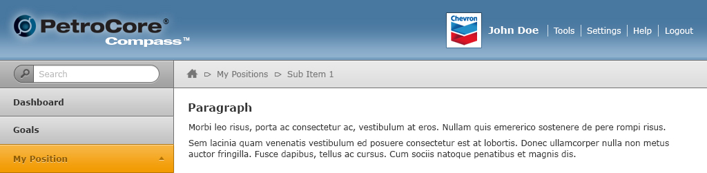

Typography
The entire website utilizes Verdana for all body copy except the company logo. It is the primary brand typeface and is more legible at smaller sizes.
Examples
Verdana – Regular
123ABCabc
Verdana – Bold
123ABCabc
Logo
The font used in all PetroSkills products is Franklin Gothic Bold. The logo should resemble very close to the above image. Please do not distort or adjust the spacing or size in any way to preserve brand and identity of PetroSkills.
Global Styles
